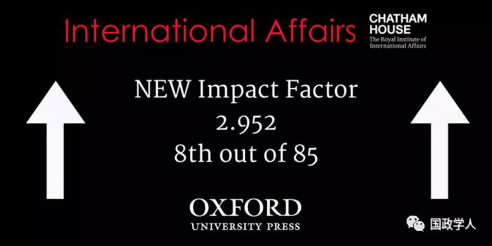

收录于合集

简 介
【作者】 Richard G. Whitman，肯特大学政治与国际关系教授、全球欧洲中心主任、欧洲项目的副研究员、社会科学院院士、英国国际研究协会(BISA)执行成员，其目前的研究兴趣包括欧盟的对外关系、欧盟的外交和安全防务政策、以及欧盟的治理和未来重点。
【编译】 杨艺华
【校对】 金 琳
【审核】 蔡 宇；李代霓
【来源】 International Affairs Volume 95, Number 2, 1 March 2019
【期刊】 International Affairs ，世界领先的国际关系期刊之一，也是少数几本涵盖整个学科的期刊之一。该期刊由伦敦皇家国际事务研究所(Royal Institute of International Affairs)于90年前创立并进行编辑，以学术严谨、注重实践而闻名。多年来，该期刊不仅收录了许多国际关系领域顶尖学者的文章，也收录了一些该领域的后起之秀的文章。

以欧盟为核心的多中心外交：脱欧后英国的欧洲外交战略
The UK’s European diplomatic strategy for Brexit and beyond
Richard G. Whitman
内容提要
通过对英国在重要会议上的演讲、声明、白皮书、政府文件以及脱欧谈判进程的分析，作者认为英国在脱欧后的欧洲外交战略将是以发展与欧盟关系为核心的多中心外交。一方面，英国将以第三国的身份影响欧盟外交决策，并与欧盟在不同领域形成不同程度的合作关系；另一方面，在英国—欧盟关系的基础上，英国将重新定义自己与其他欧洲国家的关系，开展多中心外交。
文章导读
**
**
在本文中，作者对英国在脱欧后的欧洲外交战略的观点主要分为两部分，即英国与欧盟的关系、英国与其他欧洲国家的关系。
**
**
**1
**
脱欧后英国与欧盟的关系
作者认为，英国将把与欧盟的关系作为未来欧洲外交战略的核心。 总体上 ， 英国会延续脱欧前制定的与欧盟相关的战略目标，但将用不同的方式实现这些目标。 英国希望的方式是与欧盟成为平等的伙伴进而影响欧盟的决策，但两者所拥有的市场权力不对等可能会使英国的期望落空。最有可能的情形是，失去正式成员国身份的英国只能以一个局外人的身份影响欧盟决策。脱欧后，英国驻欧盟代表团将取代英国在欧盟的常驻代表，像其他165个国家的驻欧盟代表团一样，作为第三方机构影响欧盟机构的决策。同时，苏格兰、威尔士和北爱尔兰地方政府可能会寻求与欧盟的准外交关系。
具体来说 ，在不同领域，英国与欧盟的合作程度有所不同，英国影响欧盟决策的方法也会有所不同：在 经济方面 ，英国将脱离欧盟单一市场和关税同盟，从而脱离欧盟的对外经济关系及其与第三国现有的贸易协定。未来，英国既有可能像挪威一样成为欧洲经济区的一员，也有可能像加拿大一样与欧盟签订综合性经济贸易协定。但不论怎样，欧盟都希望英国在彻底脱欧后再以第三国的身份与其谈判英欧经贸关系。所以，未来，英国将通过间接影响其他欧盟成员国及发挥驻欧盟代表团的作用影响欧盟机构的决策。 在 安全方面 ，英国寻求和欧盟保持与脱欧前同样密切的安全合作关系。欧盟则给予了非常强硬的回应：英国在安全领域的地位将恢复到第三国的地位，而第三国没有参与欧盟决策的特权，所以英国无法直接参与欧盟的安全项目。但是，英国隶属北约成员国，而且之前已经与法国等欧盟成员国建立了安全与防务的双边合作关系，所以英国仍可以通过这些途径影响欧盟。在 政治及其他领域 ，英国与欧盟的融合程度较高，所以英国仍有可能直接影响欧盟，但问题将变得非常复杂。
**2
**
英国与其他欧洲国家的关系
1 ．英法德三国关系
在这一部分，作者从三方面对英法德三国关系进行了重点论述。 第一 ， **法德对发展与英国的双边关系保持谨慎，并支持欧盟的谈判立场，即认为英国应被给予 “亲密”的第三国地位，但该地位不意味着英国能以非欧盟成员国身份享有成员国的好处。**在经济方面，德国希望维持欧洲单一市场，不允许英国既不遵守单一市场的核心原则（人员、资本、商品和服务的自由流动）又保留其身为成员国时享有的商业和人员的市场准入水平。在外交与防务方面，德国在英国脱欧的结果出来后加紧推动共同安全与防务政策的发展，并希望英国未来只以对话者的身份参与未来欧盟的外交、安全与防务政策。 第二 ， 未来的英法德关系由两大因素决定： 其一，法国和德国对欧盟未来发展方向的具体安排没有达成一致，所以英法关系与英德关系的密切程度将一如既往得不一样；其二，由于此前基民盟在选举中的一系列糟糕的表现，默克尔宣布将于2021年卸任德国总理，为此德国将进入一段政治过渡期，而这可能会导致英德关系复杂化。 第三，作者认为，尽管英法德三国曾在伊朗核危机、斯克里帕尔事件等问题中合作成功，但这不一定意味着三国将组成固定的合作小组。
2 ．英国与其他欧洲国家的关系
在这一部分，作者分别从理论和现实的角度阐述了影响英国与其他欧洲国家关系的因素，并大体勾勒出了英国与其他欧洲国家关系的走向。
从理论上，作者论证了一个观点，即 英国与其他欧洲国家的关系在一定程度上取决于英国与欧盟未来的贸易、外交与安全关系的规模和范围。
一方面，英国与其他欧洲国家的双边关系会受到英国与欧盟未来关系的影响。对 欧盟成员国 而言 ，他们与英国的关系之所以会受到影响，是因为其合作所需的有些权能属于需要与欧盟共享的权能。 而对于 非欧盟成员国 ，他们与英国的关系之所以会受到影响，因为这些国家要么是欧盟候选国，要么是已经加入了欧洲单一市场的欧洲经济区国家（瑞士虽未成功加入欧洲经济区，但通过与欧盟签订一揽子双边协议得以参与欧洲单一市场），所以他们需要顾及欧洲单一市场或申根国家的共同立场。
另一方面，英国与其他欧洲国家的少边主义关系也会受到英国与欧盟未来关系的影响。 （译者注：少边主义的原文为“minilateralism”，又被译为“微边主义”和“小多边主义”，是指少数利益相关方相互合作处理那些国际组织无法解决的过于复杂的问题。）关键问题在于：英国是否真的会离开欧盟关税同盟并与其他国家谈判新的贸易协定。如果答案是肯定的，英国就要既与欧盟其他成员国保持强有力的双边关系，又要在欧盟以外追求其“全球英国”的目标，而这两个目标是很难兼顾的。为此，英国可能会重新执行“混杂”的双边主义政策（the “promiscuous” bilateralism approach），在其寻求最大影响力的区域与相关国家结成短期同盟。一个有吸引力的办法是，英国继续召开卡梅伦政府提出的北方未来论坛（Northern Future Forum），并将魏玛三角（Weimar Triangle）和维谢格拉德四国集团（The V4）包含进来，以用最少的资源影响最多的国家。
在现实中， **作者认为，英国脱欧已经对英国与其他欧盟成员国的双边关系产生了重大而直接的影响，特别是对英国 -爱尔兰关系的影响。**一方面，英国脱欧影响了英爱两国自1973年进入欧盟以来发展的经济、社会和政治关系，特别是脱欧后北爱尔兰和爱尔兰间的边境管制可能引起局部紧张形势，这将使1998年《贝尔法斯特协议》旨在缓解冲突的努力付之东流；另一方面，欧盟其他成员国（特别是爱尔兰）已经将国家利益与欧盟在“爱尔兰边界”问题上的谈判目标相联系，所以他们将来可能会影响关于英国- 欧盟未来关系的谈判。
** 官网链接：** Oxford Academic:https://academic.oup.com/ia/article- abstract/95/2/383/5366523
_ ** _ 本文由国政学人平台独家编译首发**
更多阅读
【重磅推荐】巴里·布赞：英国学派视角下的中国崛起 | 国政学人
【重磅速递】米尔斯海默：注定失败：自由主义国际秩序的兴衰 | 国政学人
【美国研究】IS杂志：为何美国的外交大战略如此稳定？| 国政学人
国政学人 （ID：guozhengxueren)
为方便学人及时阅读高质量文章
别忘把国政学人设置 星标 哦~